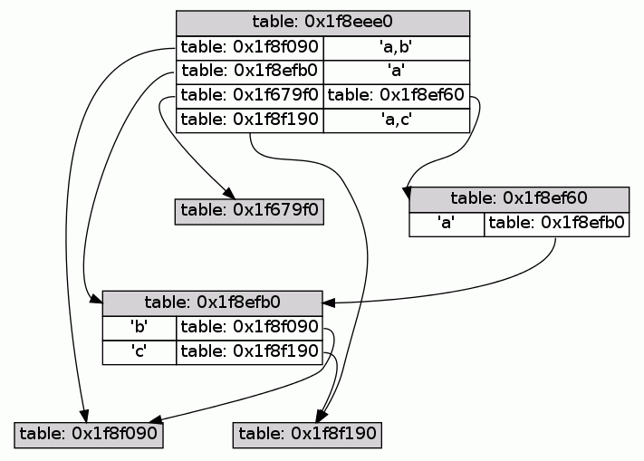

A Lua table maps single (non-nil) keys to single values. While it is easy to wrap multiple values in an array to store it in the table, using multiple keys as indices is not as simple because every array used to group multiple keys would map to a different value. This small module provides functions to store/retrieve values indexed by a key-tuple in a table.
Load the multikey module via require (you may want to assign
a short variable name or add local aliases to the put and get
functions).
local mk = require( "multikey" )
local get, put = mk.get, mk.put
You can use the module's functions on any table, previous values
should be completely unaffected by this module (with the exception of
the clear function). get, put, and putv are vararg functions
that work with any number of keys, including zero. You can also use
nil and NaN as keys.
local t = { 1 }
put( t, 1,2, "value1" )
put( t, 1,nil,3, "value2" )
put( t, 1,2,3, "value3" )
put( t, "value4" )
print( get( t, 1,2 ) ) --> value1
print( get( t, 1,nil,3 ) ) --> value2
print( get( t, 1,2,3 ) ) --> value3
print( get( t, 1 ) ) --> nil
print( get( t ) ) --> value4
print( t[ 1 ] ) --> 1
put is convenient when you already know the keys you want to use. If
you get the keys via a vararg list, the putv function is more
useful, because it takes the value to assign as second parameter
before the keys. Assigning nil will remove a previous value stored
under the same keys from the table.
put( t, 1,2,3, nil )
print( get( t, 1,2,3 ) ) --> nil
For pairs- and ipairs-like iteration there are the tuples and
ituples functions. Since nils are valid keys, the tuple iterator
produces an extra boolean as first generated value to avoid stopping
the for loop prematurely.
for _,a,b,c,d in mk.tuples( t ) do
print( a, b, c, d )
end
The clear function removes all values from the table.
In case you like an object-oriented syntax, the new function will
return a table with a metatable set, so that you can use the module
functions as methods.
local t2 = mk.new() -- mk() would have the same effect
t2:put( 1,2, "value" )
print( t2:get( 1,2 ) ) --> value
t2:clear()
print( t2:get( 1,2 ) ) --> nil
That's basically it.
The following reference assumes that the result of require'ing the
module is stored in a local variable mk.
mk.new() ==> object
mk() ==> object
Constructor for a multikey object that has a suitable metatable to
allow calling all module functions as methods of this object. It also
sets __ipairs and __pairs to the iterator functions below.
mk.get( table, ... ) ==> any -- the value
... : any* -- the keys to use for indexing
The get function retrieves a value from a multikey table. The keys
(zero or more) are given as separate arguments to this function and
can be any Lua value (including nil and NaN).
mk.put( table, ... ) ==> table -- returns the multikey table
... : any*, any -- the keys followed by a single value
This function puts a value into the multikey table indexed by any number and type of keys. The last element of the vararg list is the value to be stored, all arguments before that are keys.
mk.putv( table, val, ... ) ==> table -- returns multikey table
val : any -- the value to store
... : any* -- the keys to use for indexing
This function works similar to the put function above, but the value
to be stored comes before the keys in the argument list. This is
useful if you get the keys via a vararg list yourself.
mk.clear( table ) ==> table -- returns the empty multikey table
Sets any key/value in the given table to nil.
mk.tuples( table, ... ) ==> function -- for loop iterator
... : any* -- prefix keys where to start iteration from
The tuples function returns a for loop iterator that iterates over
all keys and values similar to the pairs iterator. Since nils are
valid keys in multikey tables, the first value the iterator returns is
a non-nil dummy value. You can specify a set of keys to start the
iteration from as arguments to this function.
mk.ituples( table, ... ) ==> function -- for loop iterator
... : any* -- prefix keys where to start iteration from
The ituples function returns a for loop iterator that iterates over
all integer keys starting from 1 (similar to ipairs). It does not
use a dummy value as the tuples function above.
This module exploits the fact that a Lua table can be used as a unique
key in another table and as a container for other key-value mappings.
Here is what a multikey object looks like after t:put( "a", "a" ),
t:put( "a","b", "a,b" ), and t:put( "a","c", "a,c" ):
mt = {
[ <private key> ] = {
a = { -- this table is t1
b = {}, -- this table is t2
c = {} -- this table is t3
}
},
[ t1 ] = "a", -- table t1 from above is used as a key
[ t2 ] = "a,b", -- table t2 from above is used as a key
[ t3 ] = "a,c" -- table t3 from above is used as a key
}
This is the same thing but as a pretty picture:

One popular use of normal Lua tables is to memoize functions,
i.e. cache the result of a function call indexed by the argument of
the call and reuse the result if the same arguments are used again.
Normal tables only support one key and therefore single argument
functions. Using the multikey module support for any number of
arguments is possible. The multikey.memoize submodule contains such
an implementation.
Basic usage is:
$ cat > test.lua
local memoize = require( "multikey.memoize" )
local function f( a, b, c, d )
print( "f called:", a, b, c, d )
return a+b, c+d
end
local f2 = memoize( f )
print( f2( 1, 2, 3, 4 ) )
print( f2( 1, 2, 3, 4 ) )
print( f2( 1, 3, 3, 4 ) )
print( f2( 1, 3, 3, 4 ) )
print( f2( 1, 2, 3, 4 ) )
^D
The result is:
$ lua test.lua
f called: 1 2 3 4
3 7
3 7
f called: 1 3 3 4
4 7
4 7
3 7
Beware that this memoization is a lot more expensive than the single argument version, so profile first!
The source code (with documentation and test scripts) is available on github.
There are two ways to install this module, either using luarocks (if this module already is in the main luarocks repository) or manually.
Using luarocks, simply type:
luarocks install multikey
To install the module manually just drop multikey.lua and the
multikey-directory somewhere into your Lua package.path.
Philipp Janda, siffiejoe(a)gmx.net
Comments and feedback are always welcome.
multikey is copyrighted free software distributed under the MIT
license (the same license as Lua 5.1). The full license text follows:
multikey (c) 2011,2014 Philipp Janda
Permission is hereby granted, free of charge, to any person obtaining
a copy of this software and associated documentation files (the
"Software"), to deal in the Software without restriction, including
without limitation the rights to use, copy, modify, merge, publish,
distribute, sublicense, and/or sell copies of the Software, and to
permit persons to whom the Software is furnished to do so, subject to
the following conditions:
The above copyright notice and this permission notice shall be
included in all copies or substantial portions of the Software.
THE SOFTWARE IS PROVIDED "AS IS", WITHOUT WARRANTY OF ANY KIND,
EXPRESS OR IMPLIED, INCLUDING BUT NOT LIMITED TO THE WARRANTIES OF
MERCHANTABILITY, FITNESS FOR A PARTICULAR PURPOSE AND NONINFRINGEMENT.
IN NO EVENT SHALL THE AUTHOR OR COPYRIGHT HOLDER BE LIABLE FOR ANY
CLAIM, DAMAGES OR OTHER LIABILITY, WHETHER IN AN ACTION OF CONTRACT,
TORT OR OTHERWISE, ARISING FROM, OUT OF OR IN CONNECTION WITH THE
SOFTWARE OR THE USE OR OTHER DEALINGS IN THE SOFTWARE.